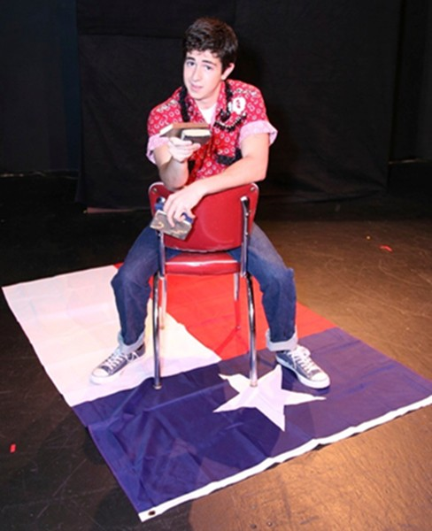

Kevin Johnson, Artistic Director
PRESENTS
THE BIBLE BELT . . . AND OTHER ACCESSORIES
2008 MAC Award Winner for Best Comedy and Best Actor, Ryan DeLuca.
Written by Paul Bonin-Rodriguez
Directed by Kevin Johnson
And featuring Ryan DeLuca
At the Cabaret Space, Temple of Music and Art, 330 S. Scott Ave.
THE BIBLE BELT . . . AND OTHER ACCESSORIES is the continuing story of Johnny Hobson, now a young man still living in a small Texas town, still working at The Dairy Queen, but now discovering things outside of the city limits, including love, humor, and a driving passion to become the next big fashion designer. Winning his Home Economics class contest and going to State Competition, Johnny discovers an admirer, a taste for vegan tamale pie, and an amazingly broad use of rhinestones . . .
You don't need to have seen the first of this series to get
the joy, the laughs and the love of BIBLE BELT ~ Austin Chronicle.
The Tucson Weekly gave the new production a preview. Figuring Things Out. Last year, James Reel praised Ryan DeLuca and THE BIBLE BELT Tucson Weekly. The Tucson Citizen also positively reviewed the show - Tucson Citizen. And also here's Kathy Allen's review in The Arizona Daily Star.
Read "Heroes Are Everywhere" from the Downtown Tucsonan magazine Downtown Tucsonan.

Plays August 20-30, 2009.
Tickets are $20 student/senior, $25 General.
Groups of 10 or more, $15 each.
Performance Dates and Times:
Aug 20, 2009 7:30pm
Aug 21, 2009 7:30pm
Aug 22, 2009 7:30pm
Aug 23, 2009 3:00pm
Aug 28, 2009 7:30pm
Aug 29, 2009 7:30pm
Aug 30, 2009 3:00pm
To purchase tickets for The Bible Belt, please go to Brown Paper Tickets at Brown Paper Tickets